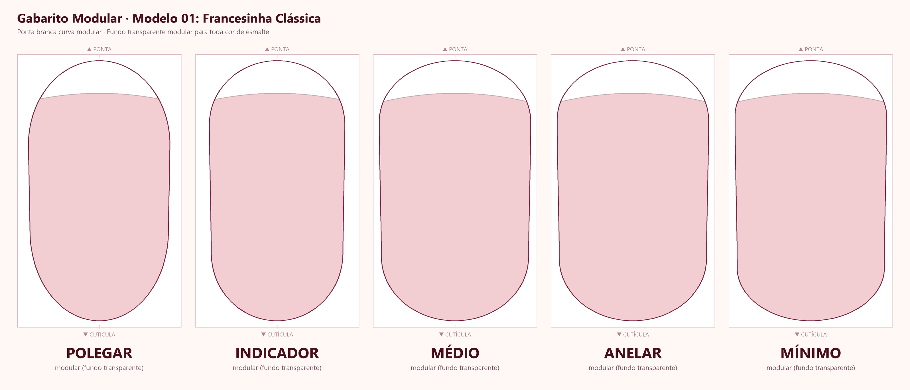

01 · Francesinha Clássica
Ponta branca com base nude translúcida
Clássicos Elegantes
Básico / Essencial
O clássico mais pedido em todos os salões de manicure. Linha curva impecável na ponta acompanhando o sorriso natural da unha sobre base nude translúcida acetinada.
Folha do Gabarito Oficial (5 Dedos · 3192 × 1370 px)
